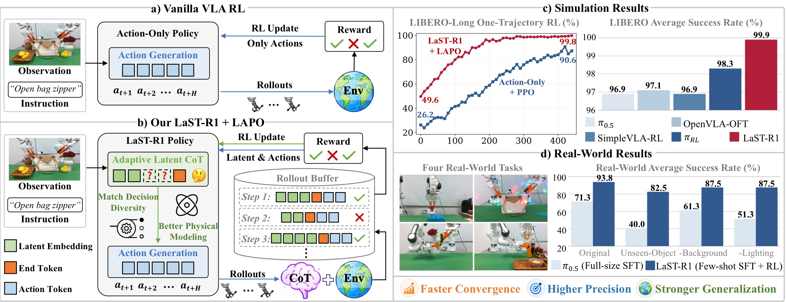
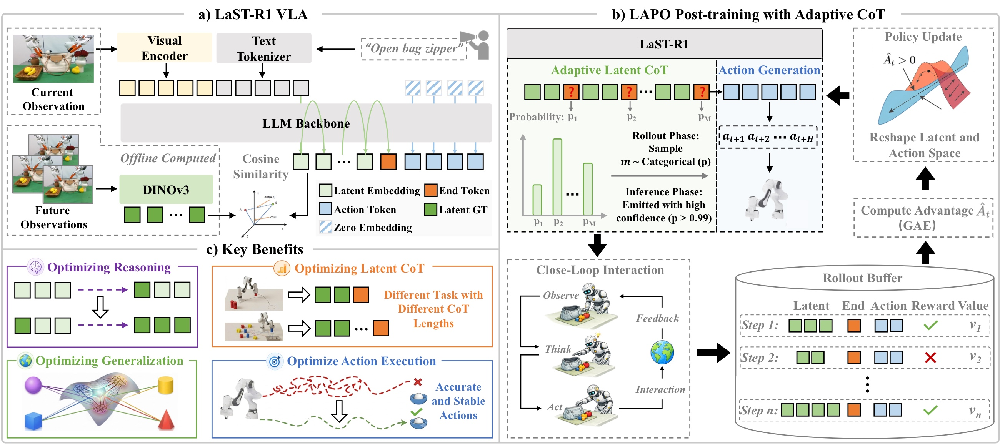
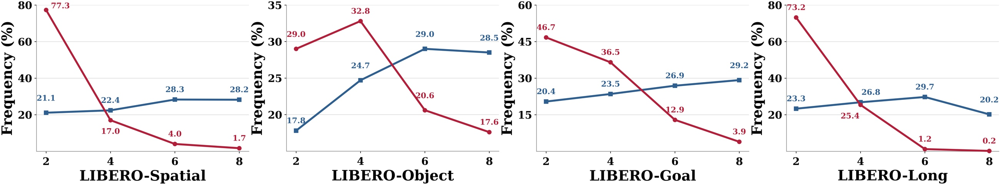
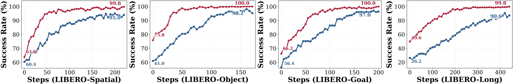
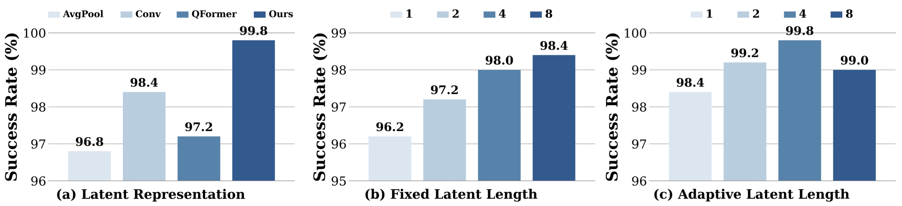
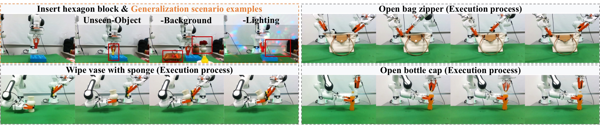
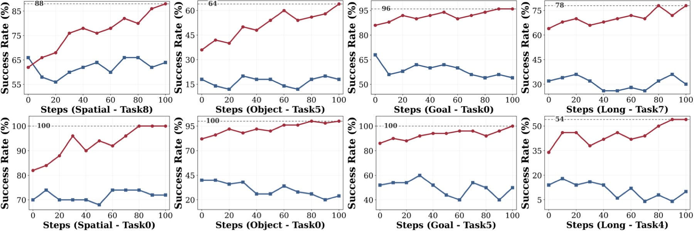
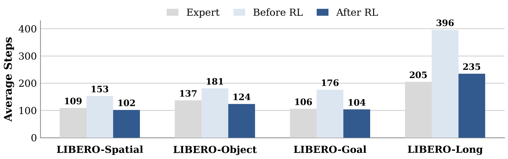
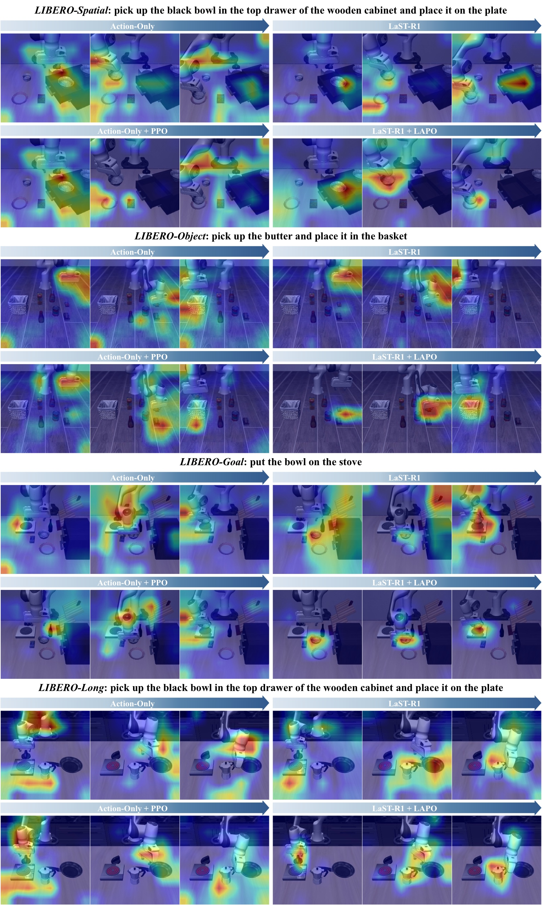

LaST-R1 论文分享简明笔记
本文基于以下本地材料整理：
- 长版笔记：
LaST-R1_论文与代码笔记.md- 论文 tex 源码：
arXiv-2604.28192v3/main.tex- 论文图片：
arXiv-2604.28192v3/figs/*.pdf- 本文图片导出目录：
assets/last-r1-share/
1. 一句话讲清楚
LaST-R1 的核心想法是：机器人 VLA 模型在输出动作前，先在连续 latent 空间里“想一想”；然后用在线 RL 的环境奖励同时优化“怎么想”“想多久”和“怎么动”。
这篇论文的核心不是又做了一个更大的 VLA，而是提出了一个针对 latent reasoning-before-acting policy 的 RL post-training 框架：LAPO, Latent-to-Action Policy Optimization。

图 1：论文 teaser，一张图概括全文逻辑。画面分四个部分：
- (a) 传统 action-only RL：模型直接从观测映射到动作，RL 信号只优化最后的 action token，中间的推理过程不受环境反馈影响。
- (b) LaST-R1 + LAPO：模型先产生 adaptive latent CoT（绿色），在
<latent_end>处终止推理，再并行解码 action token。关键区别是 RL 信号同时作用于 latent、action 和 stop length 三个对象。 - (c) 仿真学习曲线：LaST-R1 + LAPO（红色）相比 Action-Only + PPO（蓝色），收敛更快、最终成功率更高——这在 Long suite 上尤其明显。
- (d) 真实世界泛化：LaST-R1 在 unseen object/background/lighting 等 OOD 场景下，性能下降远小于 full-size SFT 的 π₀.₅ 基线。
以前：image + instruction -> action
现在：image + instruction -> latent reasoning -> action
关键：reward 不只优化 action，也优化 latent reasoning 和 stop length
2. 论文要解决什么问题
VLA 模型通常把图像、语言指令和机器人动作接起来：
image + instruction -> action
这个范式有两个常见问题：
-
只靠 SFT / behavior cloning 容易被数据限制。 模型模仿专家轨迹，但没有真正和环境试错；一旦执行时偏离专家分布，错误会累积。
-
现有 VLA RL 多数只优化 action。 在线 RL 能利用成功/失败奖励改进动作，但如果模型内部有 CoT / reasoning 过程，普通 PPO/GRPO 往往没有直接优化这部分“思考”。
LaST-R1 的切入点是：复杂机器人操作不是只靠最后的动作 token 决定成败，动作之前的物理理解、空间推理和未来动态建模也应该被环境反馈优化。
3. 方法总览
LaST-R1 把一次决策拆成三段：
image + instruction
-> latent reasoning embeddings
-> <latent_end>
-> action tokens
直观解释：
latent reasoning embeddings：模型内部的连续向量推理过程，用来表示物体关系、空间结构、未来动态等难以直接用文字表达的信息。<latent_end>：表示“想完了，可以开始行动”的特殊 token。action tokens：离散化后的机器人动作 token，最后再解码成连续控制量。

图 2：方法框架，三栏分别展示模型结构、训练流程和自适应推理效果。
左栏 (a) LaST-R1 VLA 模型结构：
- 输入：RGB 图像经过 SigLIP2-Large 视觉编码器，与语言指令的 text embedding 拼接后送入 LLM backbone（基于 Qwen3-VL-4B）。
- Latent CoT 生成：模型先自回归地产生 latent reasoning embeddings（绿色方块），每一步的 latent 向量表示空间关系、物体动态等物理信息。这些 latent 的训练 target 来自 DINOv3 视觉基础模型的
<CLS>token（离线预计算，不增加在线开销）。 - 推理终止：当模型预测出
<latent_end>token，表示”想完了”。 - Action 解码：基于 latent 推理结果，用并行解码一次性输出整个 action chunk（56 个离散 action token），再通过 parameter-free tokenizer 映射回连续控制量。Action token 之间使用双向注意力，推理上下文使用因果注意力。
中栏 (b) LAPO 在线 RL 训练流程：
- Rollout：VLA 与环境闭环交互，每步记录四个东西——latent sequence（Z_old）、action token sequence（C_t）、对应的 log-probabilities、以及 value head 估计的状态价值。
- Reward 获取：环境根据任务成功/失败返回稀疏二元奖励（终点成功 = 1，其余 = 0），成功时额外乘以 5 放大信号。
- Advantage 计算：用 GAE（γ=0.99, λ=0.95）计算每一步的 advantage。
- Policy Update：LAPO 把 advantage 作为权重，同时优化三个 ratio——action ratio（离散 token，标准 PPO likelihood ratio）、latent ratio（连续向量，用高斯密度近似）、
<latent_end>ratio（离散停止决策）。详见第 5 节公式。
右栏 (c) Adaptive Latent CoT 效果示意：
- 模型学会在不同任务/状态下使用不同的 reasoning length。
- 示例 1（顶部）：简单任务只用 2 个 latent token 就能完成，且泛化到 unseen 场景。
- 示例 2（底部）：复杂任务需要更长的 latent CoT，LAPO 优化后模型把注意力准确聚焦在关键交互部位（热力图深色区域）。
| 模块 | 做什么 |
|---|---|
| LaST-R1 VLA | 输入图像和指令，先生成 latent，再生成 action |
| LAPO rollout/update | 和环境交互，记录 latent、action、reward |
| Adaptive latent CoT | 学会什么时候发出 <latent_end> |
4. 模型结构：latent 从哪里来
LaST-R1 基于 Qwen3-VL-4B，视觉编码器使用 SigLIP2-Large，动作采用离散 token 表示。
关键设计是：latent target 不是随便初始化的 learnable token，而是来自视觉基础模型 DINOv3：
- 用 DINOv3 提取图像
<CLS>token，原始维度为 4096； - 按通道特征幅值做 top-k 选择，取
k = 2560； - 得到与 VLA hidden size 对齐的 dense latent target；
- 这些 latent target 离线预计算，训练和推理时不需要额外跑 DINOv3。
为什么这样做：
- 比简单 global pooling 更少丢空间语义；
- 比 Q-Former / convolution 这类额外模块更少引入训练不稳定因素；
- 离线预计算避免增加在线训练和推理开销。
5. LAPO：把 RL 从 action 扩展到 latent
普通 PPO 的思路是：
如果某个 action 带来了比预期更好的结果，就提高它再次出现的概率；
如果结果比预期差，就降低它再次出现的概率。
LaST-R1 把这个思想扩展到三类决策：
| 决策对象 | 论文里的优化含义 | 直觉 |
|---|---|---|
| action tokens | 学会做什么动作 | 成功动作更常出现，失败动作更少出现 |
| latent embeddings | 学会怎么内部推理 | 成功时的 latent 思考路径被拉近，失败时的路径被抑制 |
<latent_end> |
学会什么时候停止思考 | 简单状态少想，复杂状态多想 |
5.1 action ratio
action 是离散 token，可以直接算新旧策略概率比：
这里 C_t 是一次决策输出的 action token 序列。论文和代码里通常把一个 action chunk 离散成多个 token，再把它们的 logprob 加起来作为整段 action 的 logprob。
5.2 latent ratio
latent 是连续向量，没有 softmax 概率。LAPO 的做法是：假设 rollout 时旧策略生成的 old_latents 来自一个以当前策略 latent 输出为均值的高斯分布。
于是 latent ratio 可以写成：
直觉：
- 当前策略生成的 latent 越接近成功 rollout 里的 old latent，ratio 越大；
- 越远，ratio 越小；
- 再乘上 advantage，就能决定“靠近成功思考路径”还是“远离失败思考路径”。
所以这里看起来像 MSE，但它在 LAPO 里扮演的是连续 latent 的 likelihood ratio surrogate，不是普通监督学习里的 MSE loss。
5.3 <latent_end> ratio
<latent_end> 也是一个策略决策：模型需要决定什么时候结束 latent CoT。
训练时，论文会记录 rollout 中选择的停止位置，并像 PPO 优化离散 token 一样优化它：
新的 <latent_end> logprob - 旧的 <latent_end> logprob -> end ratio
如果较短 reasoning length 已经能成功，RL 会鼓励早停；如果任务复杂、想太少导致失败，RL 会降低过早停止的倾向。
6. adaptive latent CoT：学会动态分配思考预算
固定长度 latent CoT 的问题是：
- 简单动作也被迫想满固定 token，浪费推理时间；
- 复杂动作可能又需要更多内部建模。
LaST-R1 让 <latent_end> 可以在若干候选位置发出。论文默认最大 latent 长度为 8，并设置若干候选停止位置。
在 rollout 时：
- 模型在候选位置上给出
<latent_end>logits； - 用带温度的 categorical distribution 采样一个 reasoning length；
- 执行动作并得到环境 reward；
- 用 advantage 优化这个停止长度。
在推理时：
- 如果
<latent_end>置信度足够高，就提前停止； - 否则继续生成 latent，直到达到最大长度。

图 3：adaptive reasoning length 频率分布，对比 SFT warm-up 后（蓝色）和 RL 优化后（红色）的长度分布，四个子图对应 LIBERO 的四个 task suite（Spatial / Object / Goal / Long）。
关键发现：
- SFT 阶段：warm-up 时 reasoning length 从 {2, 4, 6, 8} 中均匀采样，所以蓝色柱高度差异不大。模型还没有学会区分”什么时候需要多想、什么时候可以早停”。
- RL 后：LAPO 优化后（红色柱），分布剧烈向短长度倾斜——长度 2 和 4 占据了绝大多数决策步。这说明环境 reward 成功教会模型：对于大部分状态，短推理就足够做出正确 action，不必浪费计算。
- Long suite 的特例：在 LIBERO-Long（右下）上，长度 6 和 8 的红色柱依然有可见比例，反映长任务确实有部分状态需要更多 latent token 来做物理建模。
- 终态：RL 后模型在短长度上集中，在长长度上仅保留必要余量，实现了”够用就停”的推理效率。
Adaptive CoT 不是手工指定”所有任务都想 8 步”，而是让环境 reward 选择更有效的思考长度。
7. 训练流程
论文整体训练分成三步：
flowchart TD
A["大规模机器人数据预训练"] --> B["任务内 SFT warm-up"]
B --> C["在线 RL post-training"]
C --> D["同时优化 action、latent、latent_end、value"]
7.1 预训练
论文使用约 400K 条轨迹、28M 帧，来源包括 Open-X-Embodiment、DROID、RoboMIND 等机器人数据集。DINOv3 latent target 会离线预计算。
7.2 SFT warm-up
SFT 阶段让模型先学会基本动作和 latent reasoning 格式：
- latent 对齐 DINOv3 离线 target；
<latent_end>用 CE loss；- action token 用 CE loss。
在 LIBERO 上，论文采用极低数据设定：每个任务只用 1 条 expert trajectory 做 warm-up。
7.3 在线 RL
LIBERO 仿真里，LaST-R1 使用 LAPO 做在线交互：
- action chunk 长度为 8；
- 单次决策有
56个 action tokens； - 成功给稀疏终点奖励，并乘以
5； - advantage 用 GAE，
gamma = 0.99，lambda = 0.95； - policy loss 包含 action loss、latent loss、value loss，以及 adaptive 版本里的
<latent_end>loss。
7.4 训练资源
| 阶段 | 数据量 | GPU | 训练量 | 关键配置 |
|---|---|---|---|---|
| 预训练 | 400K 轨迹, 28M 帧 | 未明确（推测 8×H20） | 未明确 | OXE + DROID + RoboMIND，DINOv3 latent 离线预计算 |
| LIBERO SFT warm-up | 1 trajectory/task（one-shot） | 8× H20 | 10K iterations/suite | bf16 + DeepSpeed, batch=64, lr=1e-5, cosine decay |
| LIBERO RL (LAPO) | 在线交互采集 | 1 节点 8× H20, FSDP + Ray | ~50–150 RL steps 收敛 | 每步 512 rollout, 4 mini-batch × 4 epoch, actor lr=3e-5, value lr=3e-4 |
| 真机 SFT warm-up | 30 trajectories/task | 8× H20 | 1K iterations | 固定 latent 长度 8 |
| 真机 RL | 在线交互 + 人工干预 | 单卡 RTX 4090 | 在线持续训练 | LoRA r=32, 异步 actor-learner, 500 transitions 后启动 |
注：论文未给出各阶段的 wall-clock 训练时间。从 LIBERO 学习曲线看，LaST-R1 + LAPO 通常在 50–100 RL steps 内收敛，而 Action-Only + PPO 需要更多步数且最终性能更低。
8. 实验结论
8.1 LIBERO benchmark
论文在 LIBERO 的四个 suite 上评估：
LIBERO-SpatialLIBERO-ObjectLIBERO-GoalLIBERO-Long
主要结果：
| 方法 | Spatial | Object | Goal | Long | 平均 SR |
|---|---|---|---|---|---|
| OpenVLA-OFT | 97.6 | 98.4 | 97.9 | 94.5 | 97.1 |
| SimpleVLA-RL | 98.2 | 98.7 | 98.8 | 91.7 | 96.9 |
| RLinf-GRPO | 98.9 | 99.7 | 98.3 | 93.6 | 97.6 |
pi_RL |
99.6 | 100.0 | 99.6 | 94.0 | 98.3 |
| LaST-R1 | 99.8 | 100.0 | 100.0 | 99.8 | 99.9 |
最值得强调的是 Long suite：LaST-R1 达到 99.8%，而对比的 pi_RL 是 94.0%。这说明 latent reasoning 对长任务更有帮助。

图 4：LIBERO one-shot online RL 学习曲线，四个子图分别对应四个 task suite。横轴是 RL 训练步数，纵轴是平均成功率 SR（50 个 hold-out 测试场景）。红色是 LaST-R1 + LAPO，蓝色是 Action-Only + PPO。
关键观察：
- 收敛速度：在所有四个 suite 上，红色曲线都更早进入高 SR 区间。尤其在 Long suite（右下），Action-Only + PPO 需要大量步数才勉强接近 90%，而 LaST-R1 快速拉升。
- 最终性能：LaST-R1 在 Spatial / Object / Goal 上都接近 100%，在 Long 上也达到 ~99.8%。对比之下，Action-Only + PPO 在 Long 上始终无法收敛到 95% 以上。
- 曲线平滑度：红色曲线震荡更小，说明 latent reasoning 起到了"认知缓冲"的作用——有了内部思考过程，RL 的优化景观变得更平滑，策略更新更稳定。
- SFT warm-up 的起点差异：图中虚线标注了 warm-up 后的初始 SR——LaST-R1 warm-up（~63.9%）高于 Action-Only warm-up（~51.0%），说明即使不做 RL，latent reasoning 本身也带来了初始优势。
Long suite 上的曲线差距直接证明了 latent reasoning 对长任务不是锦上添花，而是必需的。
8.2 关键 ablation
论文的 ablation 支持三点：
-
latent reasoning 本身有用。 one-shot SFT warm-up 后，LaST-R1 Warm-up 平均 SR 是
63.9%，Action-Only baseline 是51.0%。在 LIBERO-Long 上提升更明显：49.6%vs26.2%。 -
RL 后 LAPO 明显优于 action-only PPO。 LaST-R1 + LAPO 平均 SR 达到
99.9%，Action-Only + PPO 是95.2%。 -
DINOv3 latent 表征最好。 DINOv3 表征在 ablation 中达到
99.8%SR，高于 Convolution98.4%、Q-Former97.2%、Global Pooling96.8%。

图 5：三组核心消融实验（均在 LIBERO-Spatial 上评估）。
子图 (a) Latent 表征方式对比（RL 后 SR）：
- 对比四种构造 latent target 的方法：Global Pooling（对 VLA 视觉特征做平均池化，96.8%）、Convolution（reshape 后卷积下采样，98.4%）、Q-Former（learnable query 做 cross-attention 聚合，97.2%）、DINOv3（提取
<CLS>token + top-k 通道选择，99.8%）。 - DINOv3 最优，因为它利用了大模型预训练的语义丰富特征，top-k 选择保留了最显著的视觉分量；Global Pooling 最差，简单平均丢失了空间结构。Q-Former 不如 Convolution，说明在低数据 RL 场景下，额外的可学习参数反而增加优化难度。
子图 (b) Latent CoT 固定长度对比（RL 后 SR）：
- 测试 1 / 2 / 4 / 8 四种固定 latent 长度，同时对比 Action-Only 基线（无 latent reasoning，95.0%）。
- 长度 1→2→4 带来持续提升（95.0% → 96.2% → 97.6% → 97.8%），但从 4→8 收益递减（97.8% → 98.4%），说明 8 个 latent token 已经足够编码有效推理信息。
- 关键信息：即使只有 1 个 latent token，也优于完全没有 latent reasoning（96.2% vs 95.0%），验证了"先想再做"这一设计本身就优于纯 reaction。
子图 (c) Adaptive 候选位置数量 M 对比（RL 后 SR）：
- 固定最大长度为 8，对比 M = 1 / 2 / 4 / 8 四种候选停止位置设置（M=1 只能在第 8 位停止，相当于固定长度；M=8 在每个位置都可以停止）。
- M=4 达到最优 99.8%；M=8 反而降到 99.0%，说明停止位置过多会增加探索方差，不利于稳定优化。
- 所有 adaptive 设置（M >= 2）都优于固定长度（M=1 的 98.4%），证明动态推理长度本身就有正向收益。
总结：DINOv3 表征最好，8 个 latent token 够用，4 个候选停止位置是探索 vs 稳定的最佳折中。
8.3 真实机器人实验
真实世界任务包括：
- Insert hexagon block；
- Open bag zipper；
- Wipe vase with sponge；
- Open bottle cap。
论文报告：LaST-R1 使用少量 SFT 数据加在线 RL 后，原始场景平均 SR 从 52.5% 提升到 93.75%，超过使用 100 条专家轨迹 full SFT 的 pi_0.5 baseline（71.25%）。

图 6：真实机器人实验结果总览。图片分四行，对应四个真实任务（Insert hexagon block / Open bag zipper / Wipe vase with sponge / Open bottle cap），每行包含多组场景的照片序列，展示机器人从初始状态到完成的关键帧。
图中四个任务的特点和难点：
- Insert hexagon block（单臂）：要求六边形柱体精准插入底座槽位，考验 6-DoF 空间对准能力和 tight clearance 下的轨迹精度。
- Open bag zipper（双臂）：一只臂固定柔性袋体，另一只拉动拉链，考验双机械臂协调和对可变形物体的连续操作。
- Wipe vase with sponge（双臂）：一只臂固定花瓶，另一只持海绵沿曲面擦拭，要求接触力持续稳定、双机械臂轨迹精确同步。
- Open bottle cap（双臂）：一只臂固定瓶身，另一只拧开瓶盖，考验精细力矩控制和旋转操作的协调。
对比数据：
| 对比维度 | π₀.₅（100 条轨迹 full SFT） | LaST-R1（30 条 SFT → RL） |
|---|---|---|
| 原始场景平均 SR | 71.25% | 52.5% → 93.75% |
| Unseen-Object 泛化 | 最高下降 45% | 下降控制在 15% 以内 |
| Background/Lighting 扰动 | 下降 5–25% | 接近零下降 |
- LaST-R1 只用 30 条 SFT 数据加在线 RL，超过用 100 条 full SFT 的 π₀.₅，数据效率提升 ~3×。
- π₀.₅ 遇到 unseen object 时 SR 断崖式下跌（如 Open bag zipper 从 75% 掉到 30%），而 LaST-R1 仍保持高成功率。
真机 RL 是怎么做的
真机 RL 的训练流程和 LIBERO 仿真 RL（PPO/LAPO + GAE）完全不同，是一个异步 actor-learner 架构，核心思路是：机器人一边在真实环境里跑，后台一边用混合数据在线更新模型。
硬件配置：
- 双臂 Franka Research 3，配 3D 打印 UMI 夹爪
- 1 个 Intel RealSense D455 第三人称相机 + 2 个 D435 腕部相机
- 推理用单张 NVIDIA RTX 4090
- 数据采集和人工干预都通过 3D SpaceMouse 操作
整体架构：异步 actor-learner
Actor（机器人端） Learner（训练端）
───────────────── ─────────────────
持续执行策略 从混合 buffer 采样训练
↓ ↓
采集 transition tuples 更新 LoRA 参数
↓ ↓
遇到失败 → 人工干预纠正 定期广播新权重给 Actor
↓ ↓
干预轨迹写入专用 buffer Actor 热加载新权重继续跑
Actor 和 Learner 是并发的——Actor 不等待 Learner 更新完才继续跑，Learner 也不阻塞 Actor 采集数据。
人工在环（Human-in-the-Loop）：
真机 RL 不是全自动的。当策略执行失败或即将出错时，操作员通过 SpaceMouse 介入纠正。这些人工干预轨迹会被专门存入一个 demonstration buffer，和自动 rollout buffer 分开保存。Learner 训练时从两个 buffer 混合采样（mixed mini-batch），确保模型不会遗忘正确的行为模式。
为什么用 LoRA 而不是全参数更新：
真机 RL 只更新 LoRA 参数（rank r=32，注入所有 attention 层），冻结 base model。原因有三：
- 计算效率：单张 4090 上做全参数 RL 训练不现实，LoRA 大幅降低显存和计算量；
- 稳定更新：真机数据量少且噪声大，全参数更新容易导致策略崩溃，LoRA 约束了更新空间；
- 热加载：Learner 完成更新后把 LoRA 权重广播给 Actor，Actor 可以无缝切换新权重而不中断执行。
训练目标：BC + Q-guided policy improvement
这也是和 LIBERO 仿真 RL 最大的区别——真机不用 PPO/GAE。
LIBERO 仿真 RL 用的是 PPO 风格的 clipped objective + GAE 算 advantage，优化的是"新旧策略的概率比值"。真机 RL 用的是完全不同的组合：
- Behavior Cloning（λ_BC = 1.0）：对 demonstration buffer 里的样本做模仿学习，让模型保持在正确行为附近；
- Q-guided policy improvement（λ_Q = 0.5）：用学到的 Q 函数引导策略向高价值方向改进，类似 DDPG 风格的确定型策略优化。
Critic 用 one-step TD target（γ=0.98），target value 软更新（τ=0.005）。Critic 更新频率是 Actor 的 2 倍（2:1 更新比）。
奖励设计：
真机没有仿真里自动判断任务成功的 verifier，所以奖励是人工给的：
- 终端奖励：操作员确认任务完成时给
+10 - 步数惩罚：每一步
-0.05，鼓励模型走更高效的轨迹
训练启动和超参：
- 收集满 500 条 transition 后才开始在线优化
- 学习率 1e-5，AdamW，weight decay=0，梯度裁剪 norm=1.0
- 梯度累积 16 步，每路 micro-batch=2，等效 batch size ≈ 32
- SFT warm-up：每个任务 30 条专家轨迹，1K iterations，固定 latent 长度 8
真机 RL vs LIBERO 仿真 RL 对比：
| 维度 | LIBERO 仿真 RL | 真机 RL |
|---|---|---|
| 更新方式 | 同步（collect → train 循环） | 异步 actor-learner |
| 参数更新 | 全参数 | 仅 LoRA（r=32） |
| 训练目标 | PPO clipped + GAE + latent/transition loss | BC + Q-guided policy improvement |
| Advantage 计算 | GAE（γ=0.99, λ=0.95） | One-step TD（γ=0.98） |
| 奖励信号 | 仿真自动判断（稀疏 0/1） | 人工确认（+10 成功 / -0.05 步数） |
| 干预机制 | 无 | 人工 SpaceMouse 干预，存入专用 buffer |
| 数据量 | 1 trajectory/task warm-up | 30 trajectories/task SFT warm-up |
| Latent 长度 | 多任务随机 {2,4,6,8} | 单任务固定 8 |
关键洞察：仿真 RL 追求的是"从极少量数据快速探索"（one-shot + 稀疏奖励），所以用 PPO 做保守的策略更新来防止探索崩溃。真机 RL 面对的是完全不同的挑战——物理噪声、视觉域差、安全约束——所以走的是"少量 SFT 打底 + BC 保持行为锚 + Q 函数引导改进"的稳健路线，外加人工干预兜底。
8.4 泛化和执行效率
论文还从两个角度解释为什么 latent reasoning 有帮助：
- OOD 泛化：Action-Only + PPO 容易过拟合训练任务，LaST-R1 + LAPO 在 held-out task 上仍能持续提升；
- 执行效率：RL 后轨迹步数减少，说明模型不只是更容易成功，也更会走直接有效的路线。

附录图 10：LIBERO OOD 泛化曲线详情（论文附录 §Additional Generalization Analysis）。每个 LIBERO suite 展示 2 个代表性 held-out task，共 8 个子图。横轴是 RL 训练步数，纵轴是 held-out task 上的成功率 SR。红色 = LaST-R1 + LAPO，蓝色 = Action-Only + PPO。
Figure 10: Generalization analysis on LIBERO. For each task suite, models are warmed up with one trajectory per task, followed by online RL training on 9 tasks, with the remaining 1 task for evaluation. While the out-of-distribution performance of the Action-Only PPO baseline (blue) stagnates, our LaST-R1 with LAPO (red) demonstrates continuous generalization improvements across all task suites.
这张图的核心问题是：在线 RL 训练会不会只把训练任务刷高，还是能真正提升对未见任务的泛化？ 它不是普通的"训练集成功率曲线"，而是 OOD generalization 曲线。
实验设置：LIBERO 每个 suite 有 10 个任务（Spatial: 10 个空间操作任务、Object: 10 个物体操作任务、Goal: 10 个目标导向任务、Long: 10 个长程任务）。每个 suite 中选 9 个任务做 online RL 训练，剩下 1 个任务完全不参与 RL 训练，用这个 held-out task 测试 OOD 成功率。也就是说，图上测试的是：模型在训练 9 个任务的过程中，对第 10 个没训练过的任务表现有没有变好。
上图列出了每个 suite 的 2 个 held-out task，其关键趋势如下：
- Spatial suite：Action-Only + PPO 在一些 spatial 任务上完全失效（如 Spatial-Task8 长期在 0% 附近震荡），而 LaST-R1 + LAPO 在 Spatial-Task0 上快速收敛至 100%。
- Object suite：LaST-R1 + LAPO 能稳定收敛至 100%（如 Object-Task0），而 Action-Only 曲线容易早期崩盘后停滞。
- Goal suite：Action-Only + PPO 在训练中段达到 ~65% 后开始退化——典型的过拟合迹象。LaST-R1 + LAPO 保持单调增长至 100%（如 Goal-Task5）。
- Long suite：Action-Only + PPO 过拟合最严重——在 Long-Task7 上从峰值跌落至接近 0%；在 Long-Task4 上也始终低于 20%。LaST-R1 + LAPO 则持续提升，在 Long-Task4 上稳步爬升至 54%。
核心洞察：这张图直接支持了论文的关键主张——action-only RL 会有"过拟合"到训练任务特定运动模式的风险。加入 latent reasoning 后，模型从环境反馈中学到的是可迁移的物理理解（空间关系、物体动态），而不是机械记忆训练分布的轨迹模式，因此对 unseen 任务持续泛化。

图 8：平均执行步数对比，四个子图对应四个 LIBERO suite。每个子图有三组柱形：Expert（仿真专家轨迹）、Before RL（SFT warm-up 后 RL 前的策略）、After RL（LAPO 优化后的策略）。数据在 500 条 rollout 上无条件平均（包含成功和失败的 episode）。
三个关键对比：
- Before RL vs Expert：SFT warm-up 后策略的执行步数远高于专家。这是因为 SFT 只在专家数据上做 behavior cloning，遇到 OOD 状态时靠纯反应式行为，容易陷入低效循环或长时间徘徊，逼近最大步数限制才终止。这反映的是模仿学习的经典问题——复合误差导致轨迹拖长。
- After RL vs Before RL：RL 后步数大幅下降。这说明 LAPO 不仅提高了成功率，也直接改善了轨迹效率——模型学会了走更直接、更果断的行动路线。
- After RL vs Expert（最大亮点）：在 Spatial、Object、Goal 三个 suite 上，LaST-R1 RL 后的平均步数甚至低于专家轨迹。这意味着 RL 后的模型不是简单模仿专家的保守路径，而是通过优化 latent reasoning 找到了比专家更高效的解决方案（例如更直接的抓取路径、更少的中间调整）。
关于"latent reasoning 会不会让模型变慢"：RL 后 latent length 缩短（图 3），执行步数也减少（图 8），整体比专家更快完成。
8.5 视觉注意力证据
论文附录还用 attention 可视化说明：加入 latent reasoning 和 LAPO 后，action token 对视觉区域的关注更集中在任务相关物体和目标位置上。

图 9：action-to-vision cross-attention 可视化（Grad-CAM），四行对应 LIBERO 四个 suite 上的典型轨迹，四列对应四种模型配置。热力图叠加在原图上，深色/暖色区域表示 action token 对视觉区域的关注度更高。
四种配置的纵向对比（按列看）：
- Action-Only (SFT)（第 1 列）：注意力散乱、覆盖大面积无关背景区域。SFT 后的纯动作模型没有形成对任务相关物体的明确聚焦。
- LaST-R1 Warm-up (SFT)（第 2 列）：加入 latent reasoning 后，注意力明显更集中在关键交互对象上。latent 推理起到了"语义锚点"的作用，为 action 解码提供了更好的视觉上下文。
- Action-Only + PPO（第 3 列）：RL 后注意力过于集中在夹爪附近区域，缺乏对目标位置的远程感知。这说明纯粹优化 action 空间会导致模型过度近视——它学会了"在夹爪周围小心操作"，但没有学会"看向目标"。
- LaST-R1 + LAPO（第 4 列，最佳）：注意力精准且动态迁移——在抓取阶段集中在被操作物体上，在放置/目标阶段转向目标位置。因为 LAPO 同时优化 latent reasoning 和 action，模型学会了将视觉注意力从物体动态切换到目标导向。
按行看任务案例：
- Spatial 例子：LaST-R1 + LAPO 在抓取碗时关注碗，移动时关注目标盘子。
- Object 例子：LAPO 后准确定位目标物体（如特定颜色的积木）。
- Goal 例子：注意力随任务阶段（移动→放置）自然转移。
- Long 例子：在多步骤长任务中保持连贯的注意力切换。
这组热力图是 latent reasoning 的定性证据——它不只是数字的微小提升，而是从根本上改变了模型"看"的方式。
9. 这篇论文的核心贡献
可以概括成三点：
-
提出 LaST-R1 框架。 将 latent CoT reasoning 和 action generation 放进同一个 VLA policy 里，先推理再行动。
-
提出 LAPO。 把 PPO 风格的 RL post-training 从 action 扩展到 continuous latent reasoning 和
<latent_end>停止决策。 -
提出 adaptive latent CoT。 让模型根据环境状态动态选择 reasoning length，兼顾复杂任务的推理能力和简单任务的执行效率。
10. 常见问题
Q1：latent CoT 是不是可解释的文字推理？
不是。这里的 CoT 是连续 latent embedding，不是自然语言文本。它更像模型内部的物理状态表示或未来动态摘要。
Q2：LAPO 的 latent loss 是不是普通 MSE？
不完全是。形式上包含 latent 距离，但论文把它解释为高斯分布下的 likelihood ratio surrogate，再用 PPO clipping 和 advantage 加权。它的作用不是固定模仿某个 ground-truth latent，而是根据 rollout 的好坏决定靠近或远离旧策略产生的 latent。
Q3：old_latents 是不是标准答案？
不是。old_latents 是 rollout 时旧策略实际生成的 latent 轨迹。它是否值得学习，取决于这段轨迹的 advantage。
Q4：为什么 adaptive latent length 有用？
因为不同状态需要的推理预算不同。简单状态可以早停，复杂状态需要更多 latent token。RL 通过 reward 学会哪个长度更可能带来成功。
Q5：论文最应该关注的局限是什么？
论文当前的 adaptive CoT 仍然依赖最大长度和候选停止位置，例如最大长度为 8、候选位置数量有限。它还不是完全自由的动态停止机制。另外，真实世界实验虽然展示了强结果，但附录中的真实世界 RL pipeline 与 LIBERO 的 LAPO/PPO 实现并不完全一致，需要注意仿真和真实机器人的训练细节不同。
11. 最短版 takeaway
LaST-R1 = latent reasoning-before-acting + online RL post-training。
它的关键是 LAPO：不只优化机器人最后的 action，还用环境 reward 优化 action 之前的 continuous latent reasoning 和 <latent_end> 停止长度。因此成功经验会同时塑造“怎么想、想多久、怎么动”，这也是它在长任务和泛化实验中表现更好的主要解释。